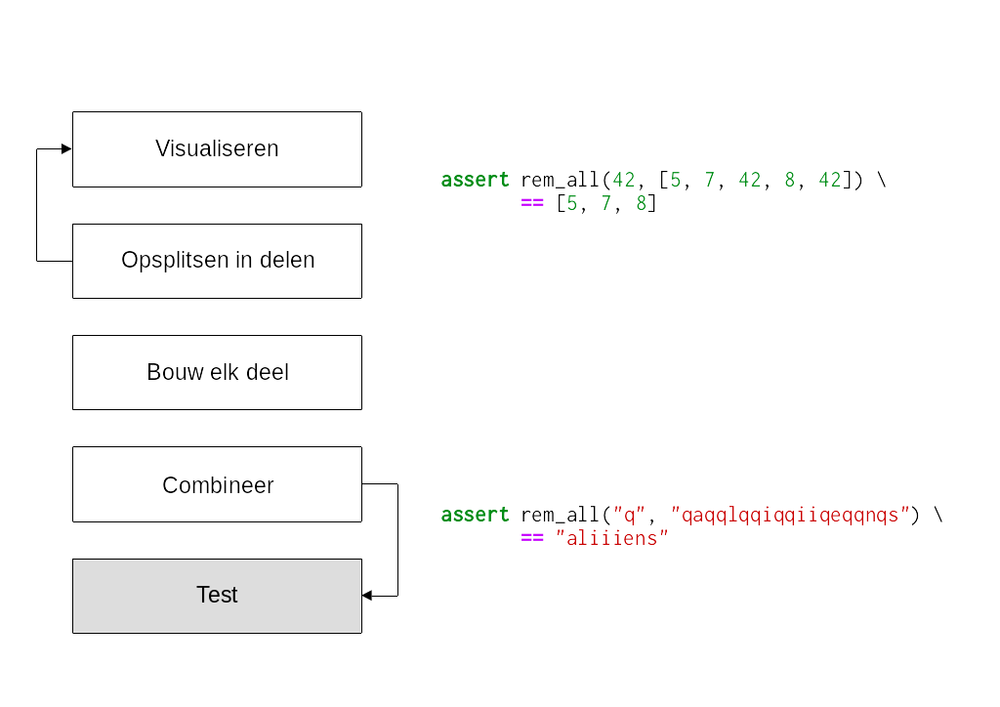

Ontwerp van algoritmen¶
Use it or lose it!
## Recursie
Het blijft lastig ...

File "<ipython-input-1-8e64fb3fb9d4>", line 3
Het blijft lastig ...
^
SyntaxError: invalid syntax
Ook voor mij blijft het een lastig onderwerp. Hoewel ik inmiddels al jaren recursie gebruik, nog steeds heb ik het vaak mis en moet ik weer terug naar de tekentafel om verder te zoeken naar de juiste zelfgelijkenis.
Zelfgelijkenis¶
De oplossing van een probleem hangt af van oplossingen van kleinere identieke problemen
Het is een algemene oplossingsstrategie die niet specifiek is voor informatica!
Faculteit, oftwel op hoeveel mogelijke manieren kunnen we een aantal aliens op een rij zetten? Het is een goed voorbeeld van hoe we zelfgelijkenis zouden kunnen ontdekken en waar we op zoek gaan naar de abstracte en meest algemene vorm van het probleem. Het opdelen naar een eerste geval en een rest is altijd een goed begin.
Het eerste geval en de rest¶
def factorial(n):
if n <= 1:
return 1
else:
return n * factorial(n - 1)
Je hebt veder kennisgemaakt met een functies, condities, types en collecties. Maar ook met operatoren voor handelingen op data (bijvoorbeeld +, *, // en %) en vergelijkingen van data (bijvoorbeeld ==, !=, ‘>’ en ‘<=’). Met deze beperkte kennis van Python syntax en semantiek heb je al snel algoritmen voor interessante problemen kunnen schrijven!
De uitdaging¶
De zelfgelijkenis van een probleem kunnen aanwijzen

Laten we het een “uitdaging” noemen maar het is bekend dat recursie voor hoofdpijn en slapeloze nachten kan zorgen!
Het doel¶
Het ontwerpen en implementeren van algoritmen voor het oplossen van problemen
Denk terug aan het begin waar we probeerden duidelijk te maken wat informatica nu precies is? Programmeren is uiteindelijk maar een klein onderdeel van informatica, de nadruk ligt op het bedenken van recepten om van een bepaalde input tot een gewenste input te komen. Hier zijn oplossingsstrategiën voor nodig en recursie is daar één van, later zullen we andere benaderingen gaan ontdekken (die misschien ook voor minder hoofdpijn gaan zorgen).
Vooruitblik¶
Interessante problemen: projecten
Als het doel het ontwerpen en implementeren van algoritmen voor het oplossen van problemen is, wat zijn dan interessante (lastig op te lossen) problemen?


Algoritmen¶
def rem_all(e, L):
"""Returns sequence L with all e's rmovd
...
Top down¶
Visualiseren¶

Opdelen¶

Bouwen¶

Combineren¶

Testen¶

Combineren en testen¶
def letter_score(c):
"""Scrabble letterscore
"""
...
def scrabble_score(s):
"""Scrabble wordscore
"""
LC = [letter_score(c) for c in s]
return sum(LC)
assert letter_score("q") == 10
assert scrabble_score("quiz") == 21
Use it or lose it!¶
def rem_all(e, L):
"""Returns sequence L with all e's rmovd
"""
if len(L) == 0:
return L
elif L[0] != e:
return L[0:1] + rem_all(e, L[1:]) # use it!
else:
return rem_all(e, L[1:]) # lose it!
Bijvoorbeeld
assert rem_all(42, [5, 7, 42, 8, 42]) == [5, 7, 8]
assert rem_all("q", "qaqqlqqiqqiiqeqqnqs") == "aliiiens"
Een bekend patroon¶
def max(L):
"""Find max value in L
"""
if len(L) < 2:
return L[0]
max_of_rest = max(L[1:])
if L[0] > max_of_rest:
return L[0] # use it!
else:
return max_of_rest # lose it!
We hopen dat je het use it or lose it! patroon inmiddels herkent? Denk bijvoorbeeld aan de recursieve implementatie van de ingebouwde functie max, een oude bekende! Denk ook terug aan andere voorbeelden of opgaven waar steeds een vergelijkbare keus werd gemaakt.
Quiz¶
Van rem_all naar rem_one¶
Verwijder e één keer uit L
def rem_one(e, L):
"""Returns sequence L with one e rmoved
"""
if len(L) == 0:
return L
elif L[0] != e:
return L[0:1] + rem_one(e, L[1:])
else:
return rem_one(e, L[1:])
Bijvoorbeeld
assert rem_one(8, [7, 8, 9, 8]) == [7, 9, 8]
assert rem_one("d", "coded") == "coed"
Deze rem_one werkt nog als rem_all. Eén onderdeel moet worden aangepast, welke is het?
Oplossing¶
def rem_one(e, L):
"""Returns sequence L with one e rmoved
"""
if len(L) == 0:
return L
elif L[0] != e:
return L[0:1] + rem_one(e, L[1:])
else:
return L[1:]
Als L[0] niet gelijk is aan e, gebruik het dan. Maar als sprake is van een lose it situatie dan zal dit maar één keer moeten gebeuren. Een herhaling (recursie) is in dit geval dus niet nodig en het volstaat om de rest van L direct terug te geven.
Van rem_one naar rem_up_to¶
Verwijder alles uit L tot en met de eerste e
def rem_up_to(e, L):
"""Returns sequence L up to the first e moved
"""
if len(L) == 0:
return L
elif L[0] != e:
return L[0:1] + rem_up_to(e, L[1:])
else:
return L[1:]
Bijvoorbeeld
assert rem_up_to(8, [7, 8, 9, 8]) == [9, 8]
assert rem_up_to("d", "coded") == "ed")
Deze rem_up_to werkt nog als rem_one. Eén onderdeel moet worden aangepast, welke is het?
Oplossing¶
def rem_up_to(e, L):
"""Returns sequence L up to the first e moved
"""
if len(L) == 0:
return L
elif L[0] != e:
return rem_up_to(e, L[1:])
else:
return L[1:]
In dit geval hebben we geen nut meer voor een use it geval L[0], want alles tot een met (de use it’s moeten juist worden verwijderd). Misschien is het in dit geval toepasselijker te spreken over forget it!
LCS¶
Het string-matching probleem in biologie:
‘HUMAN’
‘CHIMPANZEE’
Wat is de langst gemeenschappelijke opeenvolging van karakters?
In biologie is dit een werkelijk probleem waar het gaat om het vergelijken van DNA-sequenties.
Fylogenie¶
De studie van relaties tussen verschillende groepen organismen en hun evolutionaire ontwikkeling.

Op basis van genetische overeenkomsten (gemeenschappelijke DNA subsequenties) kan worden bepaald hoe dicht bij of ver weg organismen evolutionair van elkaar staan.

Hoe kunnen de best gemeenschappelijke subsequenties worden gevonden binnen deze genomen? Dit is een algoritmisch probleem waar het lose it or use it principe kan worden toegepast.
Subsequenties¶
Use it or lose it!
subseq("alg", "magical") == False
subseq('alg','twasbrillig') == True

Wat is een klein (eerste) stukje van het probleem?
Hoe zouden we het omschrijven in termen van de inputs?
Wat blijft er over na de behandeling van dit stuk?
Zijn er nog andere functies die we nodig hebben?
Dit zijn de vragen die je jezelf af zal moeten vragen als je een probleen gaat opsplitsen in kleinere delen. Bijvoorbeeld in dit geval, als s[0] overeenkomt met sbig[0], wat blijft er over na een eerse behandeling?
Base case¶
def subseq(s, sbig):
"""Returns True if s is a subsequence of sbig;
False otherwise. Both are strings.
"""
if s == "":
return True
elif s[0] not in sbig: # niet meer aanwezig, stoppen
return False
Wat zou je hier identificeren als de “it” in use it or lose it? s[0] is het eerste geval dat overeen moet komen met een opeenvolgend karakter in sbig, laat dit de it zijn!
Recursieve stappen¶
Combineren met use it or lose it!
Indien it niet gelijk
s[0] != sbig[0]
use it en herhaal voor de rest
subseq(s[0:], sbig[1:])
Indien it wel gelijk
s[0] == sbig[0]
lose it en herhaal voor de rest
subseq(s[1:], sbig[1:])
De handelingen¶
Is “ctg” een subsequentie van “tacggta”?
subseq("ctg", "tacggta")use it!subseq("ctg", "acggta")use it!subseq("ctg", "cggta")use it!subseq("tg", "ggta")lose it!subseq("tg", "gta")use it!subseq("tg", "ta")use it!subseq("g", "a")lose it!Base case
s[0] not in sbig=>False
“ctg” is geen subsequentie van “tacggta”
Volledig¶
def subseq(s, sbig):
"""Returns True if s is a subsequence of sbig;
False otherwise. Both are strings.
"""
if s == "":
return True
elif s[0] not in sbig: # niet aanwezig, stoppen
return False
# recursieve stappen
elif s[0] != sbig[0]:
return subseq(s[0:], sbig[1:]) # use it!
else:
return subseq(s[1:], sbig[1:]) # lose it!
Optimalisatie¶
Use it or lose it to the max (of min)!
De kortse route tussen twee punten
De reductie van restmateriaal in een productieproces
Zoveel mogelijk gerechten bestellen tot een bepaald bedrag
Een kast zo efficiënt mogelijk inruimen
…
Het knapzak probleem¶

Kikker gaat op reis en kan maar tot een maximaal gewicht aan handige dingen meenemen in zijn knapzak. Dit wordt ook een subset-sum probleem genoemd.
Base case¶
def subset(capacity, items):
"""Given a capacity and a list of positive-number items,
subset returns the largest sum that can be made from the
items _without exceeding capacity_.
"""
if capacity <= 0 or len(items) == 0:
return 0
Het eerste geval en de rest¶
def subset(capacity, items):
"""Given a capacity and a list of positive-number items,
subset returns the largest sum that can be made from the
items _without exceeding capacity_.
"""
if capacity <= 0 or len(items) == 0:
return 0
first = items[0]
rest = items[1:]
max capacity reached :)¶
def subset(capacity, items):
"""Given a capacity and a list of positive-number items,
subset returns the largest sum that can be made from the
items _without exceeding capacity_.
"""
if capacity <= 0 or len(items) == 0:
return 0
first = items[0]
rest = items[1:]
if first == capacity:
return first # use the first - and are done
Op basis van een eerste waarde en de rest kan gelijk al een eerst besluit worden genomen: we zijn klaar als het eerste geval gelijk is aan de capaciteit!
max capacity exceeded!¶
def subset(capacity, items):
"""Given a capacity and a list of positive-number items,
subset returns the largest sum that can be made from the
items _without exceeding capacity_.
"""
if capacity <= 0 or len(items) == 0:
return 0
first = items[0]
rest = items[1:]
if first == capacity:
return first # use the first - and are done
if first > capacity:
return subset(capacity, rest) # forget the first completely
Het is ook mogelijk dat het eerste geval first de capaciteit overschrijdt. We hebben in dit geval niets aan first en kunnen het maar beter vergeten en het probleem herhalen met de rest.
max capacity not reached…¶
if first < capacity:
...
Een lastige keus¶
capacity = 10
items = [8, 4, 6]
Het is beter om items[0] niet te gebruiken
In dit geval is het verstandiger om 8 te laten vallen (los it) om vervolgens 4 én 6 te gebruiken (use it).
capacity = 10
items = [4, 8, 6]
Het is beter om items[0] wel te gebruiken
Maar in dit geval is het verstandiger om 4 wél te gebruiken (use it) om vervolgens 8 niet te gebruiken (lose it) en tot slot 6 wel te gebruiken (use it).
Hoe kan je nu tussen deze twee mogelijkheden kiezen, of beter, hoe zou je een algemene oplossing voor dit probleem kunnen vinden?
De makkelijke keus¶
Gebruik beide en kies de beste uitkomst!
Use it!
useit = first + subset(capacity - first, rest)
Lose it!
loseit = subset(capacity, rest)
capacity to the max!
max(useit, loseit)
To the max¶
def subset(capacity, items):
"""Given a capacity and a list of positive-number items,
subset returns the largest sum that can be made from the
items _without exceeding capacity_.
"""
if capacity <= 0 or len(items) == 0:
return 0
first = items[0]
rest = items[1:]
if first == capacity:
return first # use the first - and are done
if first > capacity:
return subset(capacity, rest) # forget the first completely
if first < capacity:
useit = first + subset(capacity - first, rest)
loseit = subset(capacity, rest) # use it!
return max(useit, loseit) # lose it!
Hoe werkt dit?¶
if first < capacity:
useit = first + subset(capacity - first, rest)
loseit = subset(capacity, rest)
return max(useit, loseit)

Zowel useit als loseit worden op de stack geplaatst, maar onderweg gebeurt dit natuurlijk vaker tot alle mogelijkeden zijn uitgeput (de base case is bereikt). Recursie zie je hier heel goed terugkomen in de vertakkingen en met max(useit, loseit) wordt het een beslisboom. Probeer van boven naar beneden en weer terug omhoog de useit en loseit aanroepen en tussentijdse resultaten te volgen.